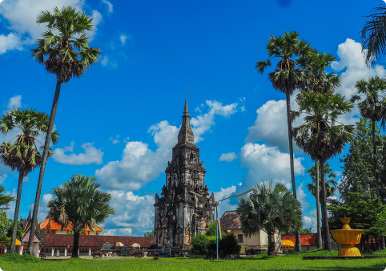

Luang Prabang is also the ancient royal capital of Laos, so there is a lot of history in this
region too.It's definitely one of the best places to visit in Laos.
Vangvieng
It is popular place and tourist for Lao people and tourist. Have fun to the max with this.
Vientiane
Vientiane Capital is the home to the most significant national monument in Laos.It’s a fun place
just like anywhere. Have delicious food, Beautiful traditional and people friendly.
Savannakhet
Savannakhet is the 2nd largest city in Laos (after Vientiane) and lies on the banks of the Mekong
River, neighbouring Thailand and Vietnam.

Pakse
Pakse is the capital of Champassak Province in southern Laos, situated at the confluence of the
Mekong and Xe Don rivers.
Sam neua
Natural beauty. The city is dotted with residential buildings featuring distinctive Laotian
designs